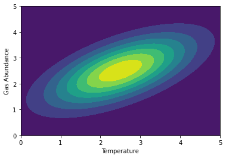

In this post, I'll outline my coding process for creating this animation illustrating the concepts behind atmospheric retrieval, a powerful statistical tool we use in exoplanet science. I hope you learn something, and feel free to build off of this code to make animations of your own, but if you do not change it substantially, please give me credit!

Step 1: Making the Toy Spectrum
We want to make a simple function that looks like an exoplanet emission spectrum that only has a couple of parameters and can be called quickly. I'm roughly trying to imitate real exoplanet thermal emission spectra, which generally slant upward at longer wavelengths as the planet-to-star contrast increases. Planets are cooler than their stars, which means their thermal emission peaks in the infrared, whereas the star's emission is already steeply dropping off at this point, even if it is still much brighter than the planet. To mimic this, I create the function "continuum", which is just a shallow exponential profile. It takes as input an array x, which will be our psuedo-wavelengths, and its amplitude, amp, which is our psuedo-temperature:
Next, we'll mimic the dips in the spectrum from molecular absorption features in our toy planet's atmosphere. These will be gaussian curves subtracted from 1, which you can think of as the continuum. The function gas also will take as input an array x for our psuedo-wavelength, and a number vmr, our psuedo-volume-mixing-ratio of the gas:
Now put these two together in one function that multiplies them:

Part 2: The Likelihood function
The purpose of retrievals is to explore and map out the shape of the likelihood hypersurface that desribes how well our model parameters fit the data. Typically, we release a population of "live points" that evaluate the likelihood at random points in the model parameter space. For the purposes of illustration, let's forgo any actual likelihood calculations and make the likeilhood surface fully known. I'll make a diagonal 2D gaussian to show that our two model parameters, temperature and gas abundance, are correlated and slightly degenerate (temperature will be the x-axis and abundance will be the y-axis):
Finally, let's make a function that returns the value of the surface for a given (x,y) position:
Part 3: Psuedo-retrieval
We're going to imitate a popular method of Bayesian parameter estimation called nested sampling. We start out by randomly distributing a set of "live points" throughout our "prior volume", which in this case is the square containing all temperature and gas abundance pairs between 0 and 5. Each temperature-abundance pair corresponds to a model with those values. We evaluate the likelihood of that model compared to the data for each point, and the live point with the lowest likelihood is set aside, and a new one is randomly placed in an area of higher likelihood (i.e., further up the likelihood hill). This process repeats until all the live points converge to the highest likelihood values of our parameters. To imitate this, let's randomly distribute several points on the likelihood surface and evaluate each of their "heights". The lowest height point will be set aside and we'll find a new one that's higher up on the hill. I want to save 3-dimensional array of the the x,y, and z coordinates of each point at each step of this process so when we animate this later, I just need to slice through this array.
Part 4: Plotting and Animating
Now to plot the process up! This will be a complicated figure with a lot of moving parts. We're going to show simultaneously the "data" and the set of models being evaluated against the data in one panel, the live point locations and heights in another panel, and the 1D projected distributions of the live points in their own separate panels.
That'll do it!! If you have trouble reach out on Twitter @ExoplanetPete. Happy plotting!